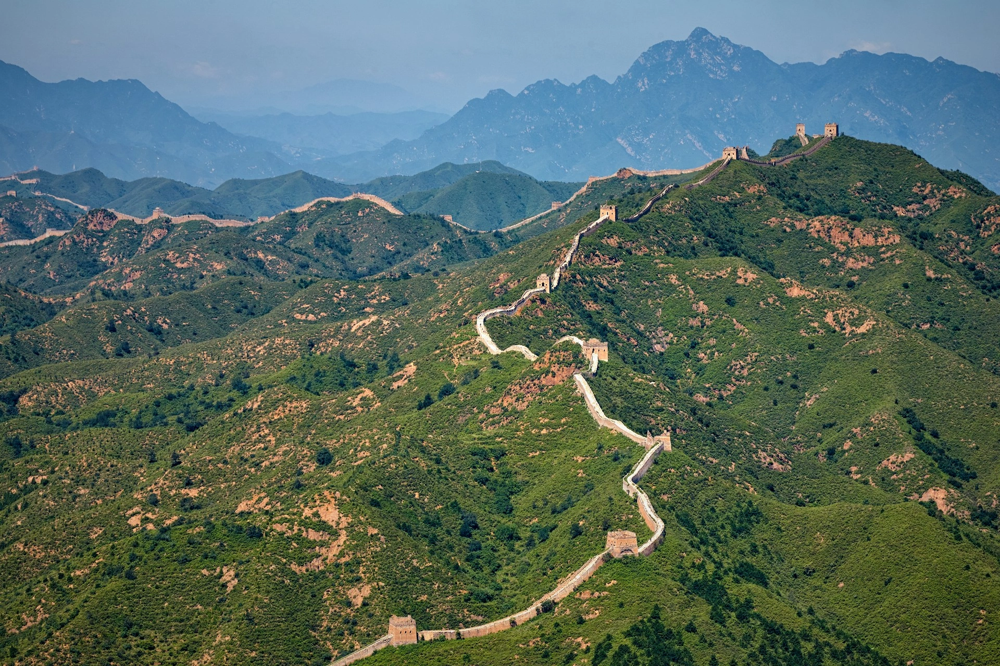
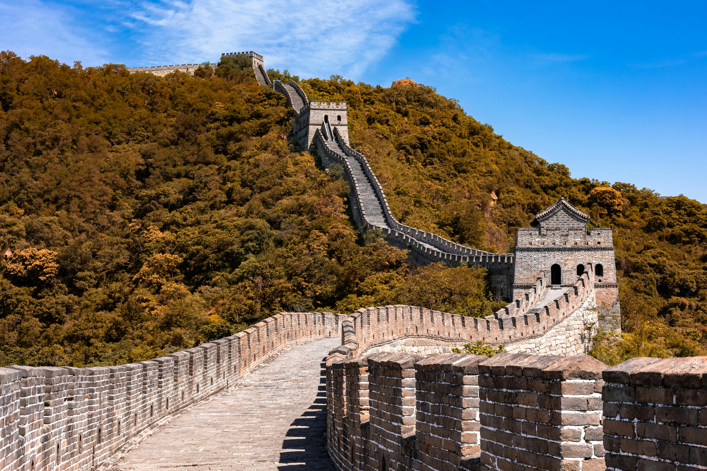
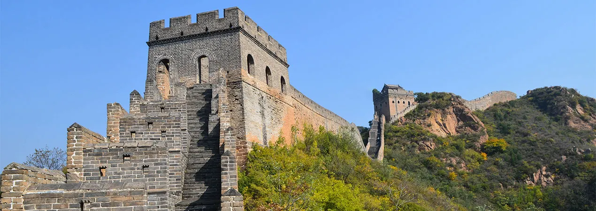
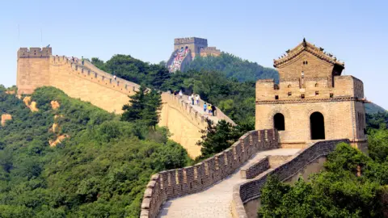

The Great Wall Of China
China
In Northern China, the Great Wall of China is one of the largest construction projects recorded in human history. Despite popular belief, the Great Wall cannot be seen by the naked eye from outer space. While estimates of its length vary, China's National Administration of Cultural Heritage reports the wall to be an impressive 13,170 miles (21,195 kilometers) long. Walking the entire wall nonstop would take approximately 17 months! Some work on the wall dates back to the 7th century BCE, although the Ming Dynasty constructed the principal, most well-preserved parts between 1368 and 1644. Contrary to popular belief, the Great Wall of China is not a singular, connected wall. It actually consists of numerous walls, some parallel for stretches, accompanied by watch towers and platforms. China built the Great Wall to better protect its northern border, although its effectiveness is debated. The Great Wall has been a UNESCO World Heritage site since 1987. Today, over 10 million tourists visit the wall every year. Visitors can easily access it from Beijing.
Key Facts
Built: 7th Century BC
Location: China
Built By: Chinese Emperors
Purpose: Military Defense
Gallery




